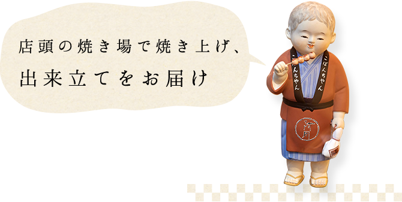
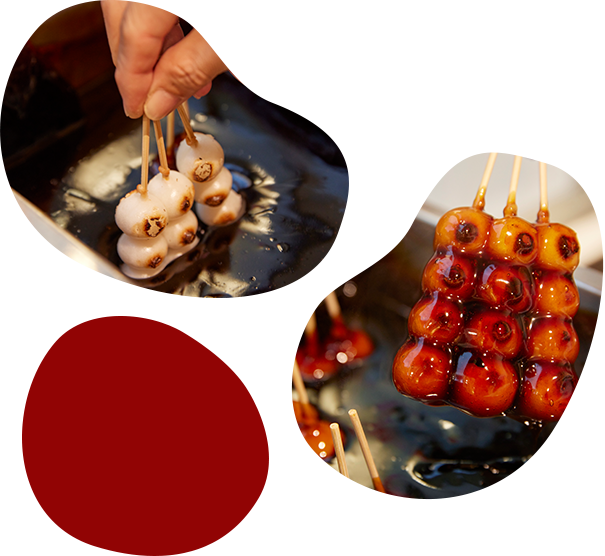
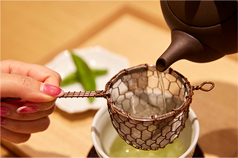

h1が入ります。h1が入ります。h1が入ります。h1が入ります。

京阿月の始まりは
一粒の小豆から
烏丸御池に暖簾を掲げる京らーめんと
甘党の店「京阿月つるりん」。
その本家となる老舗京菓子店
「京阿月（キョウアズキ）」は、
まさに小豆から始まりました。
今より170年以上も前。
和菓子の原料であった小豆を主に扱う
雑穀問屋として創業した後、
その小豆をもとに甘党のお店を始め、
屋号を「阿月（あずき）」としたのが
京阿月つるりんの前身です。
その由縁ゆえ、当店では先祖より
代々伝わる目利きで厳選した
こだわりの原材料を使用した甘味を
数多くご提供しております。
花よりだんご「こぼんちゃん」
（串だんご）をはじめ、
つるりん限定のパフェやみつまめ、
夏季限定のかき氷など、
どれもこだわりの品です。
らーめんを楽しんだ後の
デザートとしてはもちろん、
京都観光の合間にカフェとしても
和スイーツとドリンクをご堪能ください。
餡へのこだわり
小豆の目利きとして知られた先祖より伝わる、厳しい素材選びを信条とする当店。厳選に厳選を重ねた小豆を使って作る餡は、当店の甘味に欠かせないものです。つるりんでは丹波大納言の小倉を様々な和スイーツに取り入れております。夏と冬とで餡の糖度を変えるなど、職人が丹精込めた個性豊かな餡をぜひご賞味ください。
定番
※価格は全て税込みです。
栗白玉みつまめ
1,100円
ソフトクリームなし 990円
甘味の王道、みつまめもございます。栗の甘露煮、寒天、白玉、丹波大納言の小倉のバランスの良さは言わずもがな。みつは、白みつ・黒みつ・抹茶みつよりお好きなものをお選びください。
こぼんちゃん

花よりだんご「こぼんちゃん」。京阿月名物のみたらし団子です。創業以来、毎朝昆布で出汁を取り、たまり醤油と砂糖で仕込む自家製たれは、こってりコク深い味わい。香ばしい焦がしきな粉をかけてお召し上がりください。京らーめんのお供として1本165円から追加することができます。


こぼんちゃんソフト
500円- こぼんちゃん単品
- 3本入り 389円
5本入り 648円
10本入り 1,296円
15本入り 1,944円
店内飲食の他に
お持ち帰りもご用意
こぼんちゃんはお持ち帰りも承ります。食べ歩きにも最適なテイクアウト用の こぼんちゃんソフトの他、単品でもお買い求めいただけますので、大切な方へのお土産にぜひ。

こぼんちゃん3本セット
(ドリンク付き)
880円
こぼんちゃんにはドリンクセットもございます。メニューの中からお好きなドリンクを選んでもらえますが、おすすめは「煎茶 宇治丸久小山園“初みどり”」。宇治にある丸久小山園さんの香り高い日本茶を一煎ずつスタッフがお淹れします。

淹れ方には特にこだわっており、スタッフがお淹れする一煎目とご自身で注いでいただく二煎目では、時間の経過と共にまた違った味わいに。かぶせ茶をブレンドした煎茶“初みどり”ならではの爽やかな風味とやわらかな口当たりをご堪能ください。
和スイーツと甘味メニュー
※価格は全て税込みです。
- 京阿月甘味プレート
- 1,045円
- 抹茶ぜんざい
- 1,100円
- くりぃもパフェ
- 1,430円
- 抹茶パフェ
- 1,320円
- 栗ぜんざい
- 1,210円
- フルーツみつまめ
ソフトクリームなし - 990円
880円
- 栗白玉みつまめ
ソフトクリームなし - 1,100円
990円
- 京大納言わらびもち
- 825円
- 御所ぜんざい
- 990円
- 白玉みつまめ
ソフトクリームなし - 990円
880円
- あべ川餅
- 825円
- こぼんちゃん3本セット
(ドリンク付き） - 880円
ドリンクメニュー
※価格は全て税込みです。
※お食事又はスイーツとセットの場合、ドリンクを半額でお選びいただけます。（ビールは除く）
※「月のかけら（抹茶ラスク）」付き。
- 煎茶 宇治丸久小山園
“初みどり” - 770円
- ほうじ茶 宇治丸久小山園
“小倉かおり” - 660円
- おうす 宇治丸久小山園
“又玄” - 770円
- アイスグリーンティー
- 660円
- クリームソーダ
(ラムネ/メロン） - 715円
- オレンジジュース
- 660円
- アップルジュース
- 660円
- コーヒー“煎”
（HOT/COLD） - 660円
- 紅茶
“ロンネフェルト アールグレイ”
（HOT/COLD） - 660円
- ビール サッポロ黒ラベル
- 715円